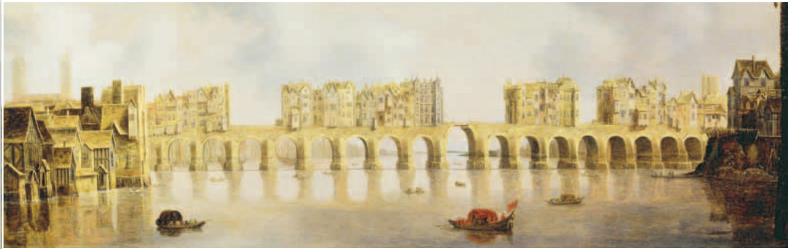
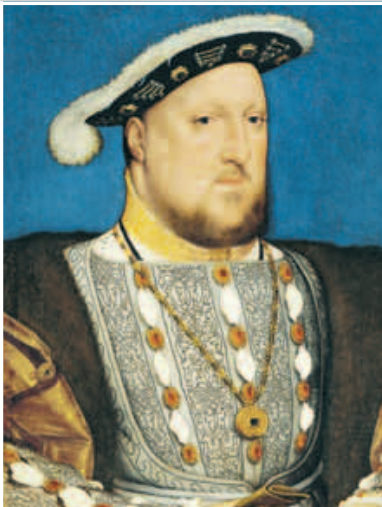
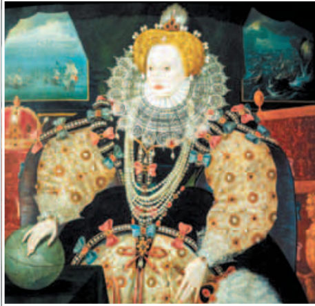
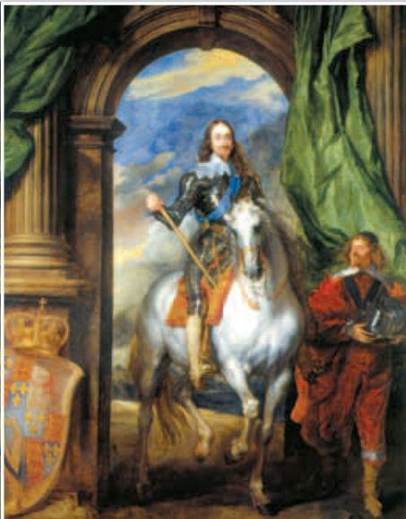
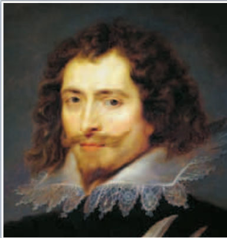

Сегодня мы переплывём пролив и посмотрим, как маленькая страна на краю Европы стала могущественной державой и почему её короли так и не стали всемогущими.
Перед тем как начать
Загадка параграфа

Вид на Лондонский мост. Худ. К. де Йонг. 1632 г. Лондон уже тогда был крупнейшим городом Европы. Почему — узнаешь в главе четвёртой.
Вопрос, на который мы ответим в концеПочему Тюдорам удалось упрочить свою власть, а Стюарты, напротив, ввергли страну в кризис?
Весь урок в трёх фразах
Тюдоры укрепили власть короля. Генрих VIII отделил церковь Англии от папы римского и сам стал её главой.
При Елизавете I Англия разбогатела на торговле и сукне. А крестьян сгоняли с земли — это называют огораживанием.
Новые короли из династии Стюартов хотели больше денег и власти, но парламент им не уступил.
Слова, которые понадобятся:
Англиканская церковьцерковь Англии после Реформации: что-то взяла от католиков, что-то от протестантов
Прерогативаисключительное право — то, что может делать только этот человек (например, король)
Пуританепротестанты, которые хотели очистить церковь от всего католического
Пресвитерианечасть пуритан: хотели, чтобы церковью управляли выборные главы общин
Джентридворяне без титулов, которые любили новшества и прибыль
Огораживаниясгон крестьян с земли, которую потом обносили изгородями
Главные герои: короли Генрих VIII, Елизавета I и Карл I.

Генрих VIII1509–1547

Елизавета I1558–1603

Карл I1625–1649
А вот что происходило в те же годы в мире и у нас, в России:
Мир
1555 г. — в Англии создана Московская компания для торговли с Русским государством
1603 г. — воцарение династии Стюартов
1628 г. — убийство герцога Бекингема
1640 г. — начало деятельности Долгого парламента, начало Английской буржуазной революции
Россия
1554 г. — Иван IV Грозный разрешил английским купцам беспошлинную торговлю с Россией
1567 г. — Иван IV Грозный безуспешно сватается к английской королеве Елизавете I
1606 г. — свержение Лжедмитрия I и расправа над ним
1613 г. — воцарение династии Романовых
Глава первая
На пути к абсолютной монархии
После Войны Алой и Белой розы в Англии стала править династия Тюдоров. Им сразу пришлось укреплять свою власть и усмирять богатых землевладельцев, которые не хотели подчиняться. Против них Тюдоры опирались на среднее и мелкое дворянство: верным людям раздавали земли и титулы.
«Король в парламенте»
В Англии издавна считалось, что страной правит «король в парламенте». Парламент — союзник и советчик короля. Главное: только парламент мог разрешить новые налоги.
Запомни: английский парламент — совсем не то, что французский. Во Франции парламент — суд. А в Англии — собрание людей, которые представляют страну. Он делился на две палаты:
Король сам созывал и распускал парламент, когда хотел. И всё же Тюдоры не спорили с парламентом, а, наоборот, старались на него опереться.
Ещё в Англии были очень сильные суды. Их решения были обязательны даже для самого короля. Поэтому королевские прерогативы — права короля что-то делать — были ограничены старыми обычаями. Если решение короля людям не нравилось, они шли в суд.
Генрих VIII
Генрих VIII. Худ. Г. Гольбейн Младший. Около 1537 г.
Основу абсолютной монархии в Англии заложил король Генрих VIII (1509–1547). Это был очень образованный человек: играл на нескольких инструментах, писал стихи и песни. Но в историю он вошёл как жестокий правитель, который отправил на эшафот Томаса Мора.
Что появилось при Генрихе VIII?
Тайный совет — главный орган власти. В него входили высшие чиновники, которых назначал король.
Звёздная палата — особый королевский суд. Она разбирала дела о государственной измене.
А вот чего у Тюдоров не было. Чиновников было сравнительно немного. И не было главной опоры абсолютизма — наёмной армии. Зато много сил тратили на строительство флота.
Запись в тетрадиАнглия в XVI – начале XVII в. Генрих VIII
• Тайный совет: занимается вопросамиГлавный орган власти при Генрихе VIII. В него входили высшие чиновники, которых назначал король.
• Звёздная палата: особый судКоролевский суд для дел о государственной измене.
• Строительство флота: наёмная армияФлот при Тюдорах строили много. Но по учебнику наёмной армии у них не было: «отсутствовала главная опора абсолютизма — наёмная армия».
• Эффективная бюрократияБюрократия — это чиновники. В учебнике сказано, что при Тюдорах их было сравнительно немного.
Сравним с Францией
Ты уже знаешь, как была устроена власть во Франции (§ 10). Положим две страны рядом:
Франция
Англия
Парламент
суд, проверяет законы короля
собрание из двух палат, разрешает новые налоги
Собрание сословий
Генеральные штаты не собирали с 1614 г.
парламент собирался, Тюдоры на него опирались
Чиновники
много: министры, интенданты
Тайный совет, чиновников немного
Армия
мощная армия
наёмной армии нет, зато строят флот
Запомни
Тюдоры укрепляли власть, опираясь на среднее и мелкое дворянство.
«Король в парламенте»: без парламента нельзя ввести новые налоги. Две палаты — лордов и общин.
Генрих VIII (1509–1547): Тайный совет, Звёздная палата (особый суд), флот. Наёмной армии не было, чиновников немного.
Проверь себя
Что в Англии нельзя было сделать без согласия парламента?
Какая палата парламента была главнее?
Глава вторая
Королевская Реформация
Сначала Генрих VIII протестантов не поддерживал. Папа римский даже дал ему почётный титул «защитник веры».
Но всё изменилось в один миг. От первого брака у короля не было сына-наследника, и он захотел жениться снова. А папа не разрешил. Тогда Генрих рассудил так: протестанты и так нравятся горожанам, а на богатствах церкви можно пополнить казну. И за несколько лет король провёл в Англии Реформацию.
Главный шаг — Акт о супрематии (о верховенстве) 1534 г. Церковь Англии теперь не подчинялась Риму и стала называться англиканской, а её главой стал король. Это усилило власть короля: выходило, что её дал сам Бог.
Вскоре земли монастырей конфисковали, а монашеские ордены разогнали.
Какой же получилась новая церковь? Англиканская церковь сохранила кое-что от католиков, а учение взяла у протестантов. Вот как это нарисовано в тетради:
Запись в тетрадиРеформация церкви
Новая церковь: независима от Рима, глава – король Англии.По Акту о супрематии 1534 г. папа римский больше не руководит церковью Англии. Её глава — король.
Монастырские земли конфискованы, монашеские ордена – разогнаны.Земли монастырей отобрали. Так король хотел пополнить казну.
Верующие получили право свободно читать и толковать библию.Библию перевели на английский. Каждый мог читать её сам и сам понимать (толковать), что в ней сказано.
За столетие она была издана тиражом более миллиона экземпляровТираж — сколько книг напечатали. Больше миллиона за 100 лет — очень много для того времени.
• 1534 гГод Акта о супрематии (верховенстве): король стал главой церкви.
Казнь Томаса МораТех, кто не принял Акт о верховенстве, объявили преступниками и казнили за измену.
Выдающийся писатель и философ, не принял о верховенстве и был казнён за измену.Томас Мор был ещё и одним из главных людей в государстве — лорд-канцлером. Он отказался признать короля главой церкви.
Библия на родном языке
Подумай, как это важно: раньше Библию объяснял священник, а теперь каждый, кто умел читать, мог открыть её сам. Англичане стали больше думать своей головой. Вот как написал об этом английский философ Томас Гоббс:
Свидетельство эпохиПосле того как Библия была переведена на английский, каждый человек, мало того, каждый мальчишка, каждая девушка, которые умеют читать по-английски, думали, что они говорят со всемогущим Богом и понимают, что он сказал.Томас Гоббс
Реформация без плана
Чёткого плана у короля не было, и правила всё время менялись. Священникам то разрешали жениться, то запрещали. Картины из Библии на стенах церквей то рисовали, то закрашивали. А крестьяне, которых согнали с монастырских земель, обеднели и были недовольны. Поэтому новую церковь долго не любили.
Разбогатеть на церковных землях тоже не вышло: Англия воевала, нужны были деньги, и многие земли пришлось продать.
Подробнее: шесть жён Генриха VIIIРазвод с первой женой не принёс Генриху счастья. Всего у него было шесть жён. Вторую он обвинил в неверности и казнил. Третья умерла вскоре после родов. С четвёртой развёлся: она показалась ему некрасивой. Пятую казнили по обвинению в измене. И только шестая, чудом избежав ареста, пережила короля.
Запомни
Генрих VIII провёл Реформацию, потому что папа не разрешил ему новый брак. А ещё он хотел пополнить казну за счёт церкви.
1534 г. — Акт о супрематии: англиканская церковь не подчиняется Риму, её глава — король.
Монастырские земли конфискованы, ордены разогнаны. Библию можно читать и толковать самим.
Томас Мор не принял Акт о верховенстве и был казнён за измену.
Проверь себя
Почему Генрих VIII порвал с папой римским?
Почему новую церковь долго не любили?
Глава третья
Эпоха Елизаветы
Портрет Елизаветы I с Армадой. Неизвестный художник. Около 1588 г. Посмотри в окна за спиной королевы: там корабли.
Дочь Генриха VIII Елизавета I правила в 1558–1603 гг. Королеву очень почитали и даже называли второй Девой Марией.
Англичане поверили, что Бог их бережёт. И вот «доказательство»: в 1588 г. у берегов Англии погибла испанская Непобедимая армада. Её послали свергнуть Елизавету и вернуть в Англию католиков. Помнишь, мы говорили о ней в уроке про Испанию?
Елизавета смогла сохранить мир между верующими и жила дружно с парламентом. Своим знаком она выбрала белого пеликана. Считалось, что пеликан кормит голодных птенцов своей кровью, то есть жертвует собой ради них. Однажды королева сказала народу: «У вас, возможно, мог бы быть более великий государь, но у вас никогда не будет более любящего».
Кто такие пуритане
Елизавета не хотела религиозных войн, как во Франции. За католиками она строго следила: на службу их не брали, если они не признавали её главой церкви.
Но и среди протестантов не было согласия. Библию теперь читали все и понимали по-разному. Многих раздражало, что англиканская церковь с её пышными обрядами слишком похожа на католическую. Тех, кто хотел очистить церковь от всего католического, называли пуританами (от латинского purus — «чистый»). Пуритане тоже были разные:
Сначала пуритане просили немногого: отменить «католические» обряды и убрать власть епископов. Но власть им не уступила. И к началу XVII в. пуритане всё чаще выступали против короля.
Запомни
Елизавета I (1558–1603): королеву очень почитали, в стране мир между верующими, дружба с парламентом. Знак — белый пеликан.
1588 г. — гибель испанской Непобедимой армады у берегов Англии.
Пуритане хотели очистить церковь от всего католического. Пресвитериане — часть пуритан: за выборных глав общин.
Проверь себя
Кто такие пуритане?
Чего хотели пресвитериане?
Глава четвёртая
Овцы, сукно и джентри
Людей в Англии становилось всё больше, им нужно было больше еды и шерсти, и цены росли. Поэтому землю стали обрабатывать по-новому, чтобы она приносила больше прибыли. Это называют аграрной революцией. Благодаря ей Англия почти не покупала еду за границей, а иногда даже продавала её.
Джентри — новые дворяне
Помнишь церковные земли, которые продал король? Их купили люди, которые хотели получать прибыль и не боялись нового: открывали мануфактуры, вкладывали деньги в торговлю. Этих дворян без титулов называли джентри (от английского gentle — «благородный»).
Джентри хорошо учили своих детей, проходили в парламент и требовали, чтобы король и знать делились с ними властью. А старые дворяне жили по-старому и теряли влияние.
Огораживания
Чтобы разводить овец, нужны большие поля. А земля была разбита на маленькие крестьянские участки, а частью земли пользовалась вся деревня. Что сделали дворяне?
Захватывают общие земли деревнии так поднимают плату за землю, что крестьяне сами от неё отказываются
↓
Обносят землю изгородями или рвамиотсюда название — огораживания
↓
Пускают землю под пастбищаза огромными стадами овец следят всего несколько пастухов
↓
Крестьяне остаются без землистановятся бродягами, батраками или уходят в город. Растёт преступность.
При Елизавете I приняли законы о бедных. Старым и больным полагалось помогать. Тех, кто хотел работать, но не находил работы, отправляли в работные дома. А остальных бродяг жестоко наказывали: сажали в тюрьму, ссылали и даже казнили.
Нация торговцев
Главное, что делали в Англии, — сукно. Раньше страна продавала за границу шерсть, а теперь — готовые ткани. Они составляли 4/5 всего, что Англия продавала другим странам. Англичане хорошо строили корабли, а грузы возили по морю: это дешевле, чем по суше.
Король помогал своим купцам. Торговым компаниям, например Московской (для торговли с Россией), давали монополию. Английское сукно покупали по всей Европе и даже в России.
Англичан стали называть нацией торговцев. В отличие от других стран, английскому дворянину было не стыдно торговать: дворяне даже отдавали младших сыновей учиться у купцов.
Через Лондон шло 9/10 всех товаров, которые Англия продавала за границу. Сначала в нём жило 50 тыс. человек, а к середине XVII в. — уже около полумиллиона. Лондон стал крупнейшим городом Европы.
Запомни
Аграрная революция: землю стали обрабатывать по-новому, ради прибыли.
Джентри — дворяне без титулов, любили новшества и прибыль, проходили в парламент.
Огораживания: крестьян сгоняли с земли под пастбища для овец. Законы о бедных жестоко наказывали бродяг.
Сукно — 4/5 того, что продавали за границу. Московская компания. Лондон — крупнейший город Европы.
Проверь себя
Что такое огораживания?
Кто такие джентри?
Глава пятая
Смена династии
У Елизаветы I не было детей, и после неё корона перешла к династии Стюартов. Король Шотландии, дальний родственник Тюдоров, стал ещё и королём Англии под именем Яков I (1603–1625). После него правил его сын Карл I (1625–1649).
Всё упёрлось в деньги
Стюарты тоже хотели сильной королевской власти. Но им не хватало денег. А без денег не наймёшь ни чиновников, ни армию. За 100 лет цены выросли в 4–5 раз, и прежних доходов стало мало.
Новые налоги и пошлины нельзя было ввести без парламента. А парламент не понимал, зачем королю столько денег, если войны нет, и отказывал. Яков I удивлялся: «Ведь может же брать пошлину король Франции, Дании, Испании? Почему же я не могу?»
Так и вышло: ни одну начатую реформу не закончили, своих чиновников и наёмной армии так и не завели. Воевать посылали плохо обученных солдат, и даже флот стал хуже французского и голландского.
Тогда Стюарты стали брать налоги без разрешения парламента. Но англичане решили, что король нарушает старые обычаи и покушается на их собственность. Против короля подавали в суд, и он часто проигрывал.
Почему Стюартов не любили
Стюартов всё время сравнивали с Елизаветой I, и её время теперь казалось англичанам «золотым веком».
Якова I многие считали чужаком: он плохо знал английские обычаи.
Карл I женился на католичке-француженке и назначал министров-католиков. Это пугало протестантов.
Раздражали и любимчики короля, фавориты. Самым могущественным был герцог Бекингем.

Герцог Бекингем (1592–1628)
Бекингем был красивым, смелым и умным. Он стал правой рукой Якова I, а потом и Карла I. Но во всём плохом, что делали Стюарты, винили именно его. В 1628 г. его убил офицер-пуританин, когда Бекингем готовил помощь гугенотам Ла-Рошели. Помнишь осаду Ла-Рошели из § 10?
Конный портрет короля Карла I. Худ. А. ван Дейк. 1633 г. Карл I был невысоким, и художникам приходилось хитрить, чтобы он выглядел выше других.
А парламент тем временем становился всё сильнее, и люди его поддерживали. В парламент всё чаще выбирали джентри, и они мечтали служить своей стране.
Депутаты говорили прямо. Один из них, Джеймс Уайтлок, сказал в парламенте, что король не имеет права без согласия парламента брать новые налоги.
Запомни
1603 г. — воцарение Стюартов: Яков I (1603–1625), Карл I (1625–1649).
Главная беда — деньги: цены выросли в 4–5 раз, а парламент не давал новых налогов.
Ни своих чиновников, ни наёмной армии, флот слабеет. Налоги без парламента — суды, которые король проигрывал.
1628 г. — убийство фаворита, герцога Бекингема.
Проверь себя
Почему Стюартам не хватало денег?
Кем был герцог Бекингем?
Скорее всего, будет проверочная
Тетрадь и тест
Вот вся запись из тетради по этой теме, как она есть. Прочитай её два раза. В первый раз — вслух, а во второй — закрывая рукой концы строк и вспоминая их.
Запись в тетрадиАнглия в XVI – начале XVII в. Генрих VIII• Тайный совет: занимается вопросами• Звёздная палата: особый суд• Строительство флота: наёмная армия• Эффективная бюрократияРеформация церквиНовая церковь: независима от Рима, глава – король Англии.Монастырские земли конфискованы, монашеские ордена – разогнаны.Верующие получили право свободно читать и толковать библию.За столетие она была издана тиражом более миллиона экземпляров• 1534 гКазнь Томаса МораВыдающийся писатель и философ, не принял о верховенстве и был казнён за измену.
Порядок строк — как в тетради.
Тест по тетради · 11 вопросов
Что такое Тайный совет при Генрихе VIII?
Звёздная палата — это…
Была ли у Генриха VIII наёмная армия?
Что показывает схема в тетради «католицизм → англиканская церковь ← протестантизм»?
Новая (англиканская) церковь…
Что стало с монастырскими землями?
Какое право получили верующие?
Каким тиражом была издана Библия за столетие?
Что произошло в 1534 г.?
Кто такой Томас Мор?
Почему Мора казнили «за измену»?
Теперь твоя очередь
Поработаем сами
1. Работаем с хронологией
Расположите в правильном хронологическом порядке события. Нажимай на события по порядку: какое было раньше всех — первым.
2. Работаем с источником
Это отрывок из речи короля в парламенте. Прочитай его внимательно.
…Я хотел бы, чтобы в вопросе о жалобах вы тщательно избегали трёх вещей:
Во-первых, чтобы вы не вмешивались в основные вопросы управления: это — моя область.
…Во-вторых, я не допущу, чтобы вы касались тех старинных моих прав, которые я унаследовал от своих предков и которыми я обладаю по обычаю… Всякие нововведения в политическом организме так же опасны, как и в естественном…
И, наконец, я прошу вас, чтобы вы остерегались выставлять в качестве тягот что-либо из того, что установлено законами... жаловаться на законы — значит жаловаться на короля, который присягал быть их блюстителем и хранителем...
Ответь на вопрос:
Какие установления король считал своей прерогативой, а какие, на его взгляд, находились в ведении парламента?
ПодсказкаВспомни: прерогатива — исключительное право. Найди в речи, что король называет «моя область»: основные вопросы управления и «старинные права», унаследованные от предков. А что остаётся парламенту? Посмотри на начало: король говорит о «жалобах» — то есть парламент может жаловаться, но не на законы и не на управление.
3. Работаем с понятиями
Раскройте смысл понятия «парламент». Сравните французский и английский парламенты, выявите черты сходства и различия.
ПодсказкаПосмотри на таблицу «Сравним с Францией» в главе первой. Во Франции парламент — суд, который регистрирует законы короля и может попросить их изменить. В Англии парламент — высший орган представительства из двух палат, без него нельзя ввести новые налоги. Чем они похожи? Оба могли мешать королю и защищали старые порядки и интересы дворян. А ещё подумай: где члены покупали свои должности, а где депутатов выбирали?
Разгадка
Подведём итоги
В XVI в. Англия изменилась: стала лидером протестантского мира, пережила аграрную революцию, боролась за господство на морях. Из малонаселённой страны на краю Европы она стала могущественным, экономически развитым государством. Тюдоры укрепили свою власть и стремились построить абсолютную монархию. Но при новой династии Стюартов этот процесс столкнулся с сопротивлением парламента и не был завершён.
Почему Тюдорам удалось, а Стюартам — нет?Тюдоры дружили с парламентом, а Стюарты пошли против него без денег и без армии.
Тюдоры опирались на парламент и на дворянство. Права парламента не трогали, верным людям раздавали земли и титулы.
Тюдоры сделали короля главой церкви. Это усилило власть: выходило, что она дана Богом.
Елизавета обеспечила мир в вере и ладила с парламентом. Её правление потом вспоминали как «золотой век».
У Стюартов не было денег (цены выросли в 4–5 раз), а парламент не давал новых налогов. Значит, не было ни чиновников, ни наёмной армии.
Стюарты нарушали традиции: брали налоги в обход парламента и проигрывали суды. Их не любили за фаворитов и католиков у власти.
Даты
Посмотри на дату и сначала вспомни сама, что тогда произошло. Только потом нажми и проверь себя.
Выбери дату, вспомни событие — и нажми.
Слова и люди
На каждой карточке вопрос. Сначала ответь на него мысленно, а потом нажми на карточку и сравни со своим ответом.